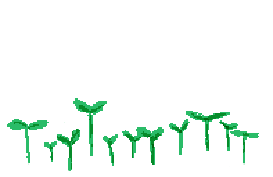
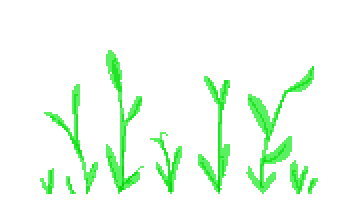
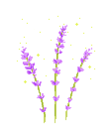

Hi!
Thanks for visiting coolguy.website, my chill pleasant home on the net. I am proud to call this home, though I know it looks a bit barebones, shoddily made, and incomplete. But, that's sorta the point!
I wanted to give you an introduction to this site and why I made it. Because you are an awesome guest, and I'm trying to be a good host. A web host, just kidding. SO ANYWAY FIRST OFF:
WHAT IS COOLGUY.WEBSITE?
my homepage
a perzine
a garden
my cabin in the woods
a hermit crab shell
a source of warm pride
a personal site from top to bottom
deeply solarpunk
WHAT IS IT NOT?
optimized for phones
complete(it'll never be complete)
marketable (it'll never be that either)
against phones (I mean I'm not trying to make it look bad on a phone, I just don't know how to do responsive stuff yet)
polished.
It's written and coded by me, Zach Mandeville!
(and the images on this page are by Angblev.com)

These are the 'chief deets'(details), but what about that 'sweet bee gee'(background)?
BACKGROUND
I wanted to have a personal website for when people asked, 'Are you online?'
Initially, I tried to do this using a website builder, but they all had constrictive templates and really wanted you to understand that a website is a business. Every builder I tried had a 'backoffice' with analytics and stats displayed prominently. I didn't want to run a business, I wanted to live a happy cyberlife, and it gets stressful when those two worlds are confused. I was paying a monthly fee to a website builder that restricted my creativity in accordance to "design best practices". and I would find myself writing a life update for my friends but see the stats saying my unique visitor count had levelled and the pingbacks were miniscule and I would suddenly wonder if my life was giving me a solid return on investment, and get too depressed to hit 'publish'.
if I wanted to use the web in a personal way, it seemed better to do so through social media. But this felt like a job too! Everything in social media is explicitly quantified with likes and shares and retweets. All the platforms have a notification bar to show you which random utterance of yours was gaining in popularity, implying that you could rank utterances against each other. Using these sites slowly shifted my mindset into a content producer, responsible for delivering relevant material that optimized the platform so I could grow my fans. I didn't like this way of thinking, but every aspect of social media's design encourages it and so it's hard to escape. I would try to use social media less, but then get emails from the FB or Twitter telling me that I haven't posted in a while and really should, or that my friends said some super interesting thing and I needed to check it immediately. It felt like getting passive aggressive notes from my boss encouraging me to do a better job.
The internal dream of these sites is that you can break out as a new media star. But if everyone is placed into the role of content producer, and urged to act like they are the rising star of the platform, then there's a flattened value to how any individual uniquely rises and achieves and all our friendship is a type of capitalist infighting. In the end, the star will always be the platform and not any one content producer on it. I was tired of this imbalance, and of feeling sad every time I logged in.
The common answer, at this point, was to get off the internet. Give yourself a digital detox from social media for a bit. But I didn't want to go offline, and I couldn't believe that the depression I felt when using these sites was an inherent quality of the internet. There had to be a way to be online that didn't require regular detoxing.
MY NEW APPROACH TO BEING ONLINE
My approach to this creating on this website is either a form of radical self-empowerment or the symptoms of depression. I think it's the former, but honestly don't know. I definitely was depressed from my previous internet habits, and this site is either a product of that or reaction against it. The best thing I can do is check in each time I'm online and ask if I'm happy, if my approach is still something that feels good, and if so I'll keep doing it. I find this process good for battling sadness in general, and great for designing websites.
First Part of Approach: Stop Setting Goals.
I have no real goals. I have no set plan for what I'm doing with this site, or life in general. But I do have set intentions, intentions for how I want to live, spend my time, and treat others. Intentions are great because they're honest and primal, and can be evaluated by sitting in the quiet and listening. Goals, on the other hand, feel artificial and frustrating. As soon as you're close to reaching a goal, you've gained enough wisdom on your journey to realize how misguided that goal was, and then set a new one. This feels inefficient and boring.
With that thought, I'm avoiding any feature that is meant to measure(and thus encourage) goals. There are no analytics for this site, no counters, and no other ways for me to gage traffic. My intention is to exist online in a way that feels honest to me. This intention does not require a certain number or type of unique visitors
Second Part: Stop Promoting Everything.
I approach this site with the knowledge that no one may ever read it. Of course, if someone does read it and cares about it then that's awesome. This entire intro is addressed to 'You' and so of course I have some concept of an audience. But I don't necessarily need to know who 'you' are, and I don't want to spend energy worrying how many of y'all are reading this site. Creating things is fun to do, and (for most things) the fun should be enough. This, ultimately, is a personal page.
But, if I do create something that I consider to be "my art", then I want to be able to give that its proper weight. A repeatedly stated advantage of social media is its reach, that everything you put on there has the possibility to reach millions. But then social media encourages you to be online all the time, to post anything you can cos you don't know which is going to be the thing that makes you a star. This ends up conflating your random scraps of thought with your heartfelt statements to the world, and both are judged by the same silly metric.
Your post stating 'remember golden grahams?' can get more spread and attention than a post sharing the piece of art you spent 6 months on. When this happens, it's easy to to think your intentional art matters less because it reached less people, and your true calling is cereal memories. Even worse, it makes you think you should adjust your art to be closer to this quantifiably popular post. Within social media, the things you make, the ways in which you promote them, and the personal moments of your life all start to feel identical. You come to believe your art is your personality and you must document everything in your life as an example of this art.
For me, this made me overthink any act of sharing and want to not create anything at all. I would worry over the way I worded, "i'm bored would anyone wanna go see a movie?" then delete the post if it didn't get enough likes. Or, I would spend a weekend on a piece of writing, share it through a twitter post and if I found that this post was liked but not retweeted, I'd delete the entire piece of writing. This depressed me so much that I stopped wanting to create anything at all. And because all forms of expression get levelled through these platforms, this meant I wanted to socialize with friends less too.
I know this homepage has no reach (or rather, any quantifiable reach). The only value to any page is determined by how much I like it, or how much some person likes it privately, or whether someone tells me specifically that they liked it. In other words, it is all mysterious and personal and this feels sooooo freeing.
Last Part: No Set Schedules!
I no longer care about schedules or being of the moment. The site gets updated at the rate at which I update it, and follows no other guide. Personal webpages are not a public necessity which must be delivered regularly to the good people. There is no golden ratio of new content that you must maintain to ensure you are a real person running a real site. Any site that implies this really just needs more material for their own business.
None of these words are products, they are things put up cos it's fun. I am thinking of my website less as some machine designed to deliver media straight to strangers' computers, and more as a secret garden that I water as needed, and tend to as a form of meditation. (I will still let you know when I've updated something, if you are interested, but it will come as a surprise like a phone call from an old friend)
So what does my approach actually look like? What's my process for getting this site up? I'll tell you!
The TECH SPECS
I have a folder on my computer called coolguy/ and in this I store all the .html files that make up my webpage. I write these with a text editor called Coda (which I got as part of an online sale a few months back, but I could use any text editor). There is no other program being used. When I want to make a new webpage, I open a blank page and start writing and coding, deciding as I go how it should look. This takes longer, most definitely, but it is so creatively pleasant. It reminds me of making collages as a kid, or a cutup and pasted zine page with all its charming messiness. Each page is written individually, and it's design is basically decided as I'm writing it. This is why the boardgame library looks different from the list of movies I want to watch or this intro.
This is also why some of the pages don't work well on a phone, or have some other mistake in them. I am learning HTML as I go and am not the best at it. But even these mistakes are pleasant, in their own way, because I know they'll disappear when I learn more. With hand-coded HTML, I'm not using some new feature of a program, I am learning the secret words to ask any browser to display my page the way I want. It all feels like learning new spells, and then casting them in a frenzied order like a Digi-Merlin
The only part of coolguy.website where this is different is the diary. For the diary pages, I use an open-source site generator called Jekyll. This is a ruby gem installed on my computer (a gem is a module written for the programming language Ruby that extends the capabilities of the language). What this gem lets me do is write up a site in Markdown, then type a command in my terminal that converts it into pre-formatted HTML. I like this, as it lets me type whatever i'm feeling without worrying about if it's properly coded. Since Jekyll is a gem that lives on my computer, it means I still don't have to depend on another site to make sure the diary is formatted properly. I can change all aspects of the diary templates to fit my aesthetic whims, and I can use this tool for as long as I want. It is, essentially, a clever trick of language that gives me new phrases to work with.
I bought the domain "coolguy.website" from the site nearlyfreespeech.net. I also rent a server from them. I like NearlyFreeSpeech because they look like a site your late-90's computer teacher put up. It's barebones, and all the help language is v. passionate and filled with integrity. I also like them because they are cheap. Their servers are pay-what-you-use, with a reasonable base price of about 30 cents a month. So if my traffic goes way up, my price would go up too (though still at a reasonable rate). At my current traffic, running the site is stupidly affordable, costing me about 47 cents a month.
The server rental is what lets me share this site with all of you. When I make a new page or update, I use Coda to establish a connection with the server i'm renting (this process is called SFTP- or secure file transfer protocol- and it is a standard feature found in free editors like Atom) Once the connection is made, I simply copy the folder on my computer to a folder on this server. The address where this remote folder lives is coolguy.website, and when you are navigating around the various pages here you're really just moving through the this special folder I organized for you.
That's really my whole setup: HTML pages I write up using a text editor then copying them over to a publicly accessible server
But how does this all make me FEEL?
I gotta say: 'How a Website Is Made' might be old knowledge to y'all, but it blew my mind. There was an incredible mental shift for me almost immediately, when I uploaded my fodler to a server. This process has been obscured by so many sitebuilders in an effort to 'simplify', but all they did was make website building feel like an arduous mysterious task. When I learned how truly accessible it was, the whole concept of the web became mystifying again-- But this time, it was a mystification I could learn and more directly experience. I do not have all the additional features that a website builder offers, but at least I understand and am in love with the features I do have.
The coolest thing, though, is that all of this is still just a folder on my computer. I give the folder to a server to make it public, but which server doesn't really matter. If Nearlyfreespeech went down, I'd still have the folder and could upload it somewhere else. If my computer breaks, I can still log into my site and download the folder again (or grab it from a backed up drive). The platforms don't matter, and the tools don't matter. All of this is, at it core, words I came up and and now get to carry with me wherever I go. And that I get to work on for as long as I'd like.
Knowing this, I developed such a fondness for this lil webpage. I don't feel stressed to update it as I don't need to justify the subscription I paid for it. When I do post something on here, it doesn't feel like a job. Coolguy.website is a collection of nice things I carry along with me like a hermit's crab with it shell. I could be still adding to this same collection when I'm 80. This feels so glacial and open and cool.
I find myself wanting to improve the site in all these little ways, too. I fret over the particular color of a box, or the padding around the title of a page. The other night, I made a small code change so the homepage wouldn't flash with unstyled HTML when it first loaded. These few lines of code took me an hour to figure out, and made the page a millisecond faster, but I'm so proud of them. My focus is no longer just the content I produce, it's all other design and delivery aspects too. On here, it all matters: the content, the medium, the code, the process. In this way, it feels closer to gardening than adding content to a machine. I tend to each little page as it needs, put in some new ones, and sometimes they produce harvests to give to others.
I find myself more open with what I want to post here, I stress about everything less. This is probably because I cannot tell who my viewership is, and it is possible that I have zero viewership. Or, really, I may have no viewership at this current moment. You may be reading this introduction 40 years after I wrote it. If any of these pages can last for decades with me, then why do I care if they don't get any immediate traffic? It's not really about that anymore.
All this can feel lonely too, but it's the modern, thin sort of loneliness. When there isn't a ticker for your current approval rating, when you can't study graphs displaying the mathematical truth of your popularity, then it can become easy to think there's no one around you at all and your popularity and approval is absolute zero. I am fortunate to have enough close-by friends that I can battle actual loneliness directly, and this site doesn't have to be a lifeline to the world. This site is the cabin I retreat to, where everything is quiet, handmade, and in its right place. When people do visit the cabin, it feels all the better because it is surprising. They had to intentionally visit to tell me their thoughts. I never know when this will happen, and it's delightful each time. (this is me asking for emails).
Ultimately, what's happened is that website building feels synonmyous now to putting out a zine. There is no one controlling what I put in there, there's no hierarchy to how I deliver this to any reader, and the readership is small but more personally felt. I love that I can transmit that healthy creativity to how I interact with the internet. It may not be successful, and this may take a lot of work and be ultimately foolish based on SEO standards or whatever but right now I am online and I am happy and this feels really new and good.
These are a lot of words, and I thank you for reading all of them! There are so many others I want to say too, but this is already a beast of an intro.
If you want to make a personal page, am not sure how to start, and like my method then i'm happy to help! I can at least tell you the biggest mistakes I made so you don't have to make them too (hopefully).
If you've made a site you're proud of, i'd love to see it and talk to you about it!
If there's anything else you wanna say, dammit I wanna hear that too!
I can be reached at webmaster at coolguy dot website
